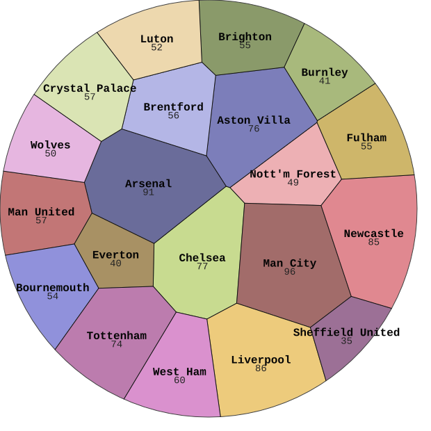
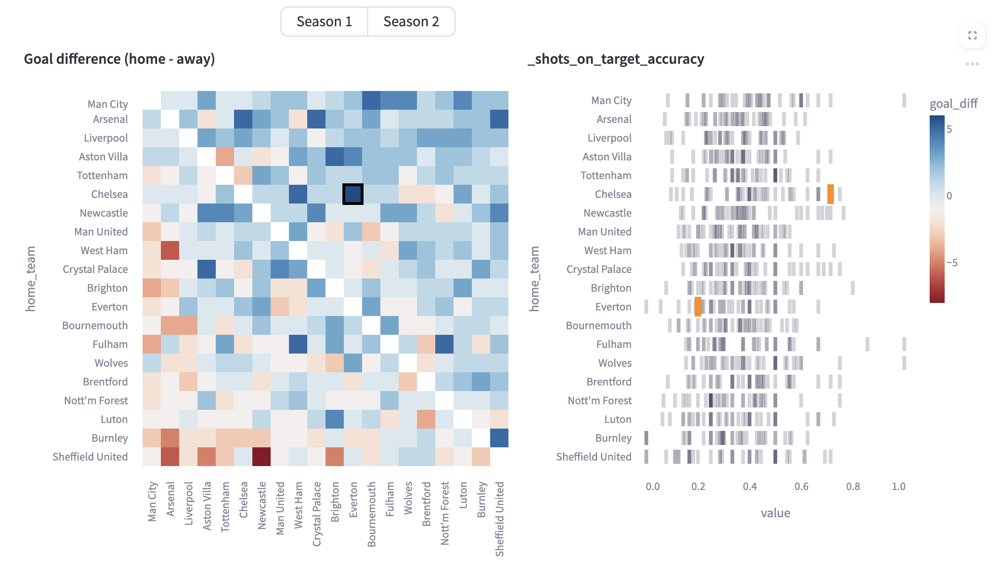
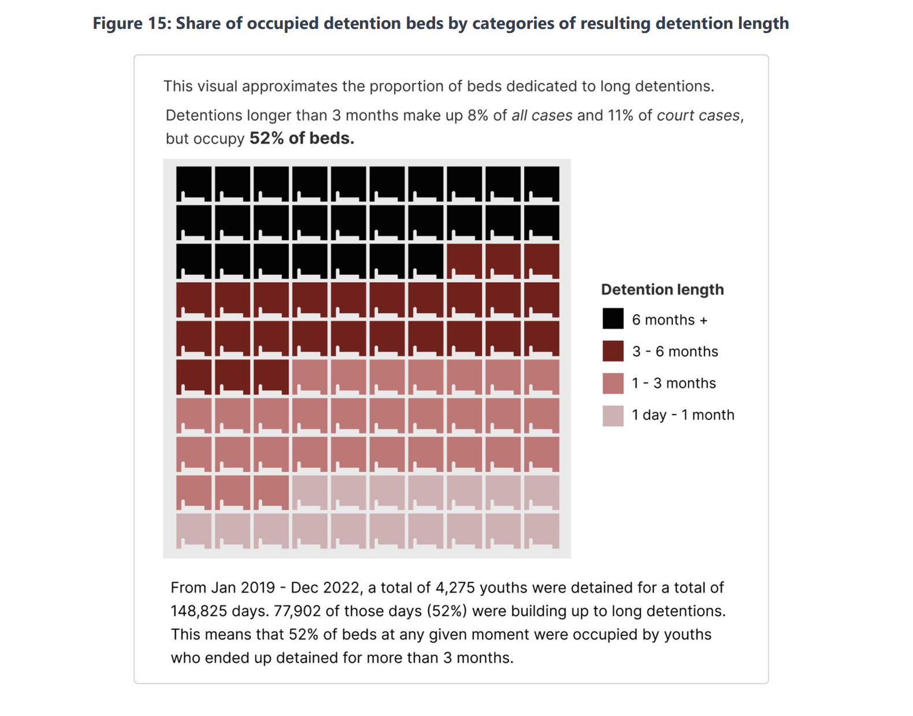
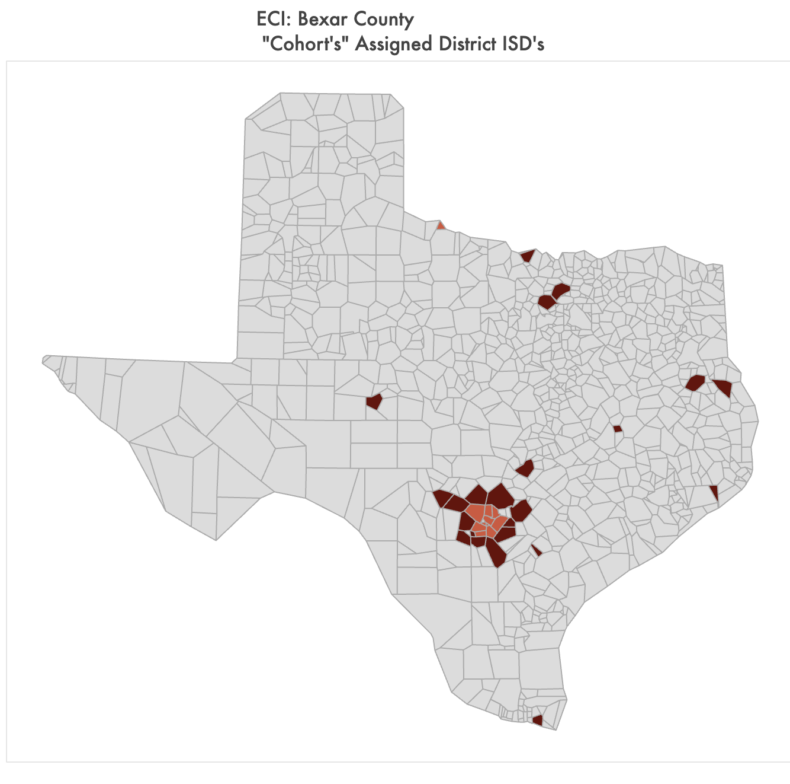
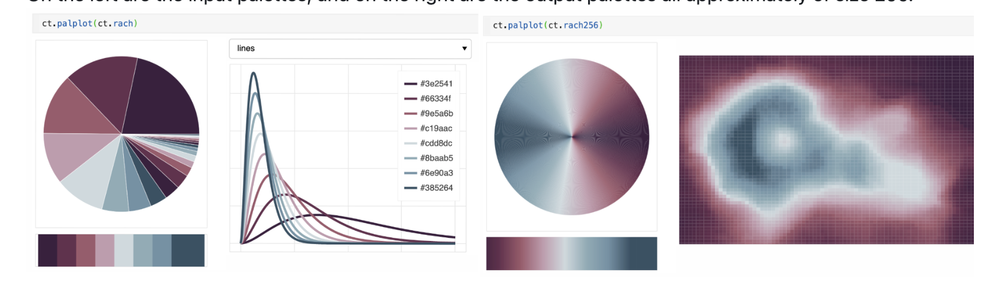
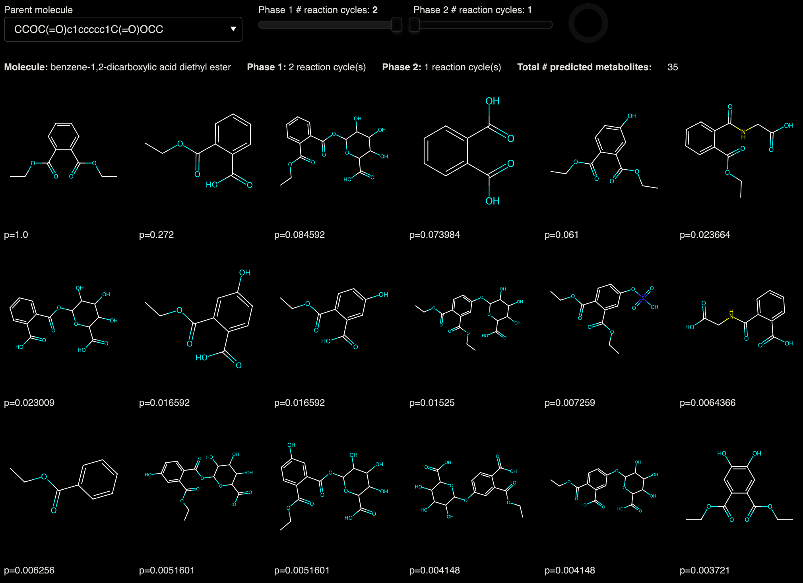
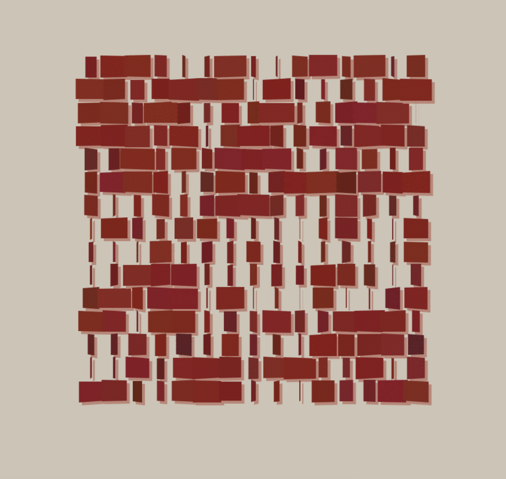
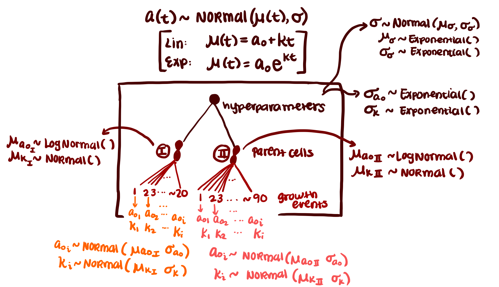
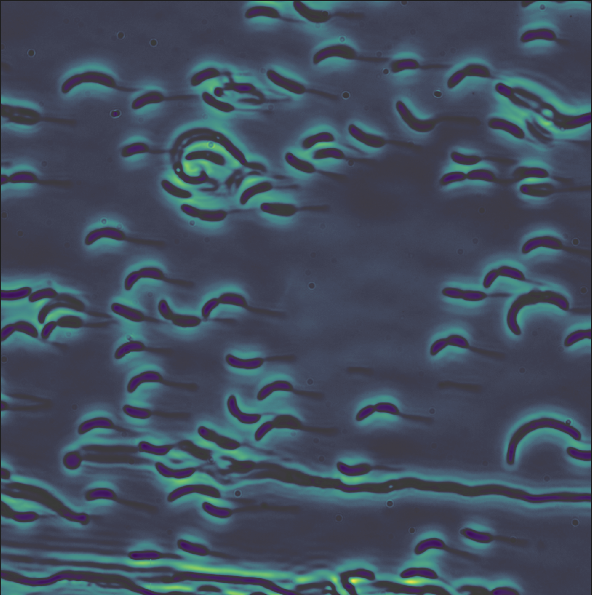
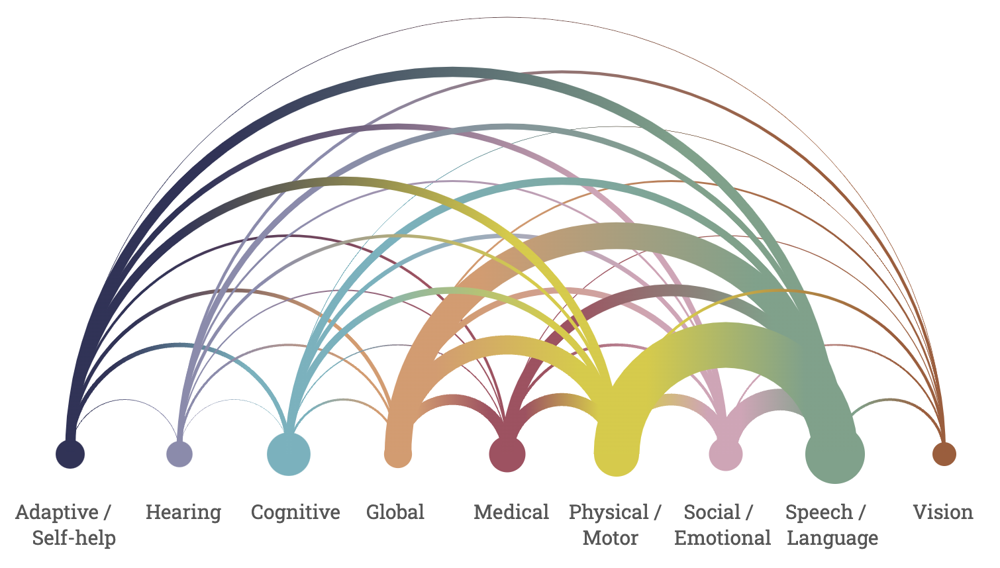

I manually vectorized all of Amtrak's routes as of 2026 and overlaid them with the official map provided.

Testing out different methods of creating voronoi treemaps: (A) one level of grouping, (B) two levels of grouping, and (C) showing proportions within groups. Inspired by NYT graphics on US budgetary spending.

Fun Streamlit & Altair data dashboard made as a TA for DATA227 at University of Chicago.

Report co-written with economist Diego Amador for HCJJPD on long detentions from 2000-2019.

Dashboard to clean administatrive inconsistencies in geographic data.

A pip-able color package I use to store and create my own palettes.

Given smile string of phthalate, metabolism prediction given Phase 1 and Phase 2 metabolic chemistry.

Le Parc's 3D kinetic structures are attempted in a 2D.

Model comparison of bacterial growth from a Bayesian perspective.

Model comparison of bacterial growth from a frequentist perspective. My first introductions to image analysis.

First mini d3 viz! Exploring SVG gradients and event handlers.